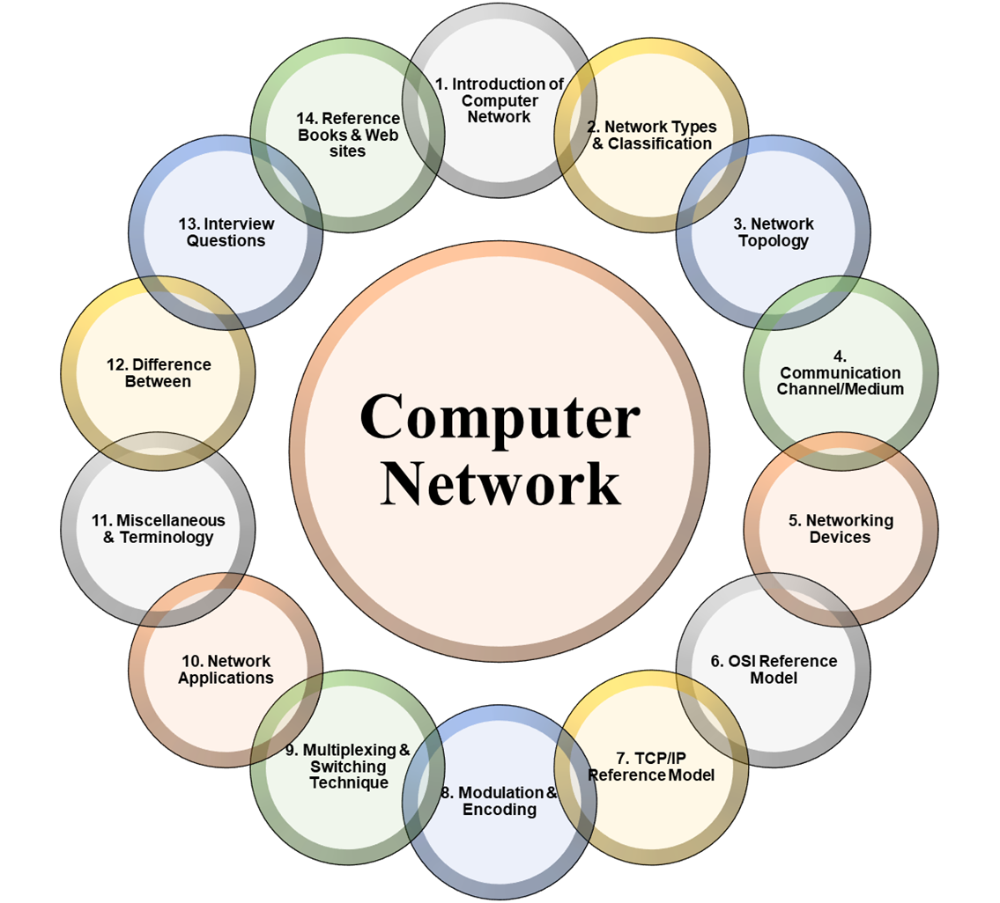
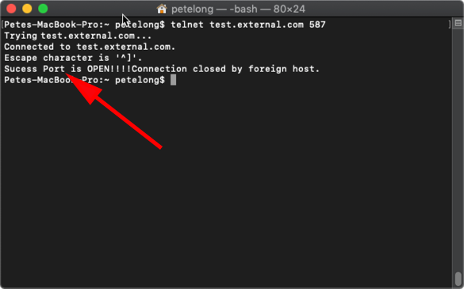

|
Hasibullah Mahmood | Portfolio I'm a Undergraduate Student at York University studying Information Technology, where upon completing, I aspire to take my knowledge and expertise to leading companies like IBM, Microsoft, or Apple. During my studies, I am currentley working on my Google IT Certificate, which is a five course program that takes you through the fundamentals of computer architecture and networking, and prepares you for roles like troubleshooting, administration, and IT support. |

|
ExplorationI am deeply passionate about the advancement of artificial intelligence, AI learning, computer architecture, and networking. My research focuses on optimizing and enhancing the flow of information across networks, with particular attention to network protocols, data transmission, and system efficiency. I explore innovative solutions to improve large-scale data management, reduce latency, and increase reliability in complex network environments. By integrating AI techniques, I aim to create more adaptive systems that can anticipate and respond to evolving network demands, pushing the boundaries of both networking technologies and real-world AI applications. |

|
The OSI Model - An Overview
The OSI (Open Systems Interconnection) Model is a conceptual framework used to understand network communication in seven distinct layers. Working with the OSI Model has given me practical experience in resolving network problems, enhancing network efficiency, and guaranteeing appropriate communication between various devices and protocols. By comprehending the role and interconnectedness of each layer, I've been able to apply solutions across a range of network configurations and address problems at many levels, from hardware to application communication. |
|

|
Terms and Definitions of Computer Networking
Several concepts and terms used in computer systems and networking are essential to operating and administrating technological infrastructures. Working with these concepts has given me hands-on expertise in setting up, debugging, and improving network infrastructures as well as computer systems. My experience has enabled me to successfully navigate through a variety of technological issues and implement efficient solutions, from comprehending how hardware components interact within a system to guaranteeing smooth communication between devices across networks. |
|

|
Testing Port Connectivity
Verifying port connectivity is an essential step in network management and troubleshooting, making certain that devices can interact with one another through designated ports. This includes utilizing tools such as Test-NetConnection, ping, and netcat to check open ports, identify firewall problems, and confirm appropriate data transmission. From my experience, I have engaged in extensive port connectivity testing to pinpoint and address communication issues, enhance network performance, and secure systems by verifying that only essential ports are open and reachable. This practical experience has been crucial in ensuring dependable and safe network settings. |